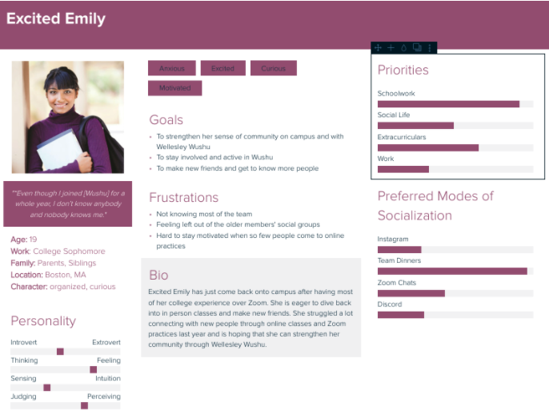
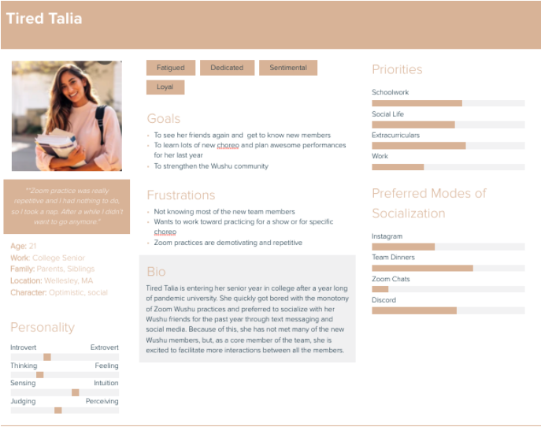

ideation.
Part I: Usage Scenarios
Based on our interviews, we felt like the experiences and needs of the members of Wushu can be expressed through the following two personas and usage scenarios.
Excited Emily:
After a year of remote practices, Excited Emily is excited to
learn Wushu with other members in person. However, she is struggling
to find a community. To get to know other members better outside of practice,
she participates in the Lunch Buddy program. Each week, she fills out the matching
form and commits to meeting with her Lunch Buddy at least once that week. Not only
does she get to meet new people, but she remembers to eat lunch!
In addition to the Lunch Buddy program, Excited Emily also uses
the Showcase feature to document her Wushu progress. She enjoys taking
photos and videos and finds that this feature provides motivation for her
to practice the new skills she’s learning.

Tired Talia:
Tired Talia is a senior who has been in Wushu since her first year.
She loves the strong community she has found in Wellesley Wushu,
but she struggled to stay motivated to keep practicing Wushu once practices went remote.
She felt that remote practices were repetitive, without enough variety.
To keep herself engaged, she practiced Wushu tutorials that other members shared and
recorded her progress. Now that practices are in person again, Tired Talia enjoys
using the wushu videos feature to practice her choreography for their upcoming show.

Part II: Design Directions
To start out, we made sketches to brainstorm possibilities for our app’s interface.
Design A:

The homepage of this design is meant to be inviting, without being overwhelming.
It features a personalized greeting, with the user’s name included on the homepage.
It offers buttons for the three main features of the app: lunch buddy program, photo scavenger hunt (later changed to the showcase feature), and collaborative Wushu practice.
The design’s photo scavenger hunt page is aimed at allowing the user to quicklyview all submitted photos.
Similarly, the collaborative Wushu practice pages are designed to provide a simple presentation of the available videos to make it easy to interact with the content.
The lunch buddy pages are designed to be a fast and visually straightforward way to sign up, schedule, or view your meeting time.
Design B: